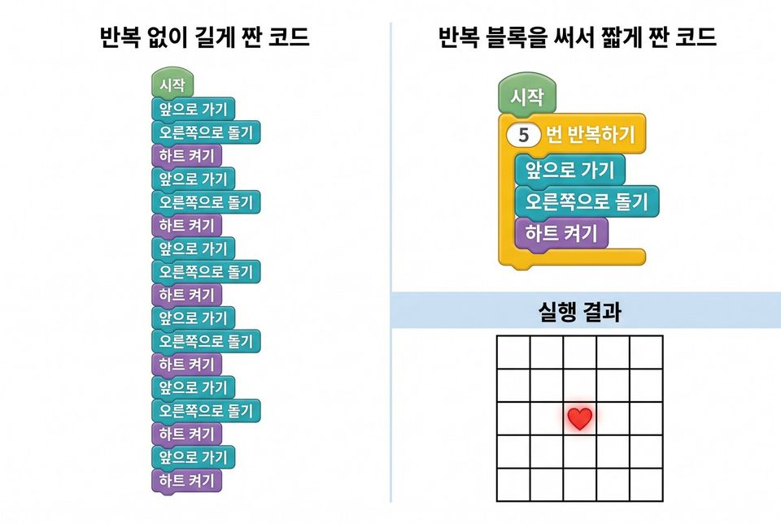
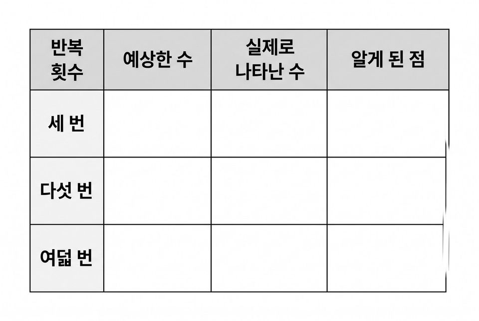
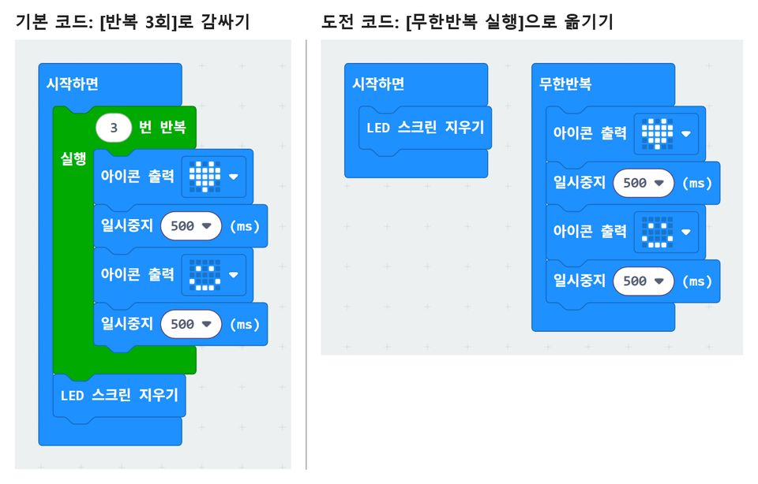
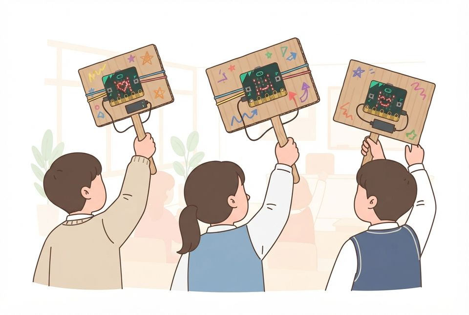

5학년 17~18차시 프로그래밍 [5실소프트웨어03-01]
같은 표시를 되풀이한 코드를 반복 블록과 견주고 응원 전광판 만들기
학습 문제 — 같은 표시를 되풀이한 코드를 반복 블록과 견주고, 횟수를 바꾸어 응원 전광판을 만들어 봅시다.
개요
| 성취기준 | [5실소프트웨어03-01] 예제 프로그램을 바꾸어 보며 순차·선택·반복 구조와 수를 세는 변수를 사용한 프로그램을 작성한다. 연계 성취기준: [6실05-02] |
|---|---|
| 핵심 역량 | 지식정보처리 역량, 창의적 사고 역량 |
| 핵심 기능 | ① 문제를 해결하는 기초적인 프로그래밍하기 ② 되풀이되는 블록 묶음 찾아내기 ③ 정해진 횟수만큼 반복하는 블록으로 바꾸기 ④ 반복 전과 후의 LED 결과 견주기 ⑤ 반복 횟수를 바꾸어 응원 전광판 만들기 |
| 가치 태도 | 생활 속에서 컴퓨터를 활용해 해결 가능한 문제를 탐색해 보려는 자세 블록 수가 줄어든 것에 그치지 않고 기기 실행까지 확인하려는 자세 |
교수학습 활동
17차시 도입 동기 유발 · 학습문제 제시17차시 전개 활동1. 늘어선 코드를 기기에서 실행하기 · 활동2. 반복 블록으로 묶어 견주기18차시 전개 활동3. 반복 횟수 바꾸고 맞히기 놀이 · 활동4. 우리 반 응원 피켓 전광판 만들기18차시 정리 배운 내용 정리 · 다음 차시 예고
17차시도입8분
동기 유발
- ‘손뼉-무릎’ 박자를 네 번 따라 하는 몸 놀이하기
- ‘손뼉-무릎 4번 반복!’처럼 줄여 말해 보기
- 화면에 열어 둔 예제에서 같은 블록이 몇 번 나오는지 세기
- 화면을 내려야 끝이 보일 만큼 코드가 긴 까닭 이야기하기

학습문제 제시
- 같은 표시를 되풀이한 코드를 반복 블록과 견주고, 횟수를 바꾸어 응원 전광판 만들기
준비물학생 기기, 마이크로비트, 데이터 전송용 USB 케이블
자료반복 활동지, 응원 전광판 미션 카드, 교사가 만든 늘어선 예제
유의점기기 나누기·연결 시간을 도입에 포함하고, 충전 전용 케이블과 구별해 나눈다.
유의점몸 놀이는 1분 안에 끝낸다.
17차시전개32분
활동1. 늘어선 코드를 기기에서 실행하기 (12분)
- 실행하기 전에 하트가 몇 번 나타날지 예상해 적기
- 예제를 마이크로비트로 옮기고 화면을 지켜보기
- 하트가 나타날 때마다 짝과 손뼉 치며 함께 세기
- 하트가 실제로 몇 번 나타났는지 표에 적기
- 늘어선 블록이 모두 몇 개인지 세어 적기
- 되풀이되는 블록 묶음이 몇 개짜리인지 확인하기

활동2. 반복 블록으로 묶어 견주기 (20분)
- 되풀이되는 블록 묶음 하나만 남기고 나머지 지우기
- [반복 ○회] 블록을 꺼내 남은 묶음 감싸기
- 반복 횟수를 5로 정하고 코드를 기기로 옮기기
- 하트가 나타난 횟수가 앞서 적은 것과 같은지 보기
- 반복 전과 후의 블록 수를 표에 나란히 적기
- 블록 수는 줄었어도 결과가 같은지 한 문장으로 쓰기
준비물학생 기기, 마이크로비트, USB 케이블
자료반복 활동지, 늘어선 예제(♥-500ms-지우기-500ms 묶음 5개), [활동1] 비교 그림
유의점반복으로 바꾸기 전에 하트 횟수를 먼저 적게 한다.
유의점블록 수가 줄어든 것만으로 성공이라고 말하지 않는다.
유의점기기가 부족하면 차례를 정해 모두 한 번씩 직접 옮기게 한다.
유의점느린 학습자에게는 되풀이 묶음에 색 테두리를 친 도움 카드를 준다.
18차시전개33분
활동3. 반복 횟수 바꾸고 맞히기 놀이 (15분)
- 반복 횟수를 3으로 바꾸기 전에 예상 먼저 적기
- 3으로 바꾼 코드를 옮기고 나타난 횟수 적기
- 8로 바꾸기 전에 다시 예상 적기
- 8로 바꾼 코드를 옮기고 나타난 횟수 적기
- 짝이 몰래 정한 횟수로 실행하면 세어서 맞히기
- 반복 횟수와 나타난 수가 어떻게 이어지는지 적기
- 예상과 실제가 달랐던 줄에 표시하고 까닭 적기

활동4. 우리 반 응원 피켓 전광판 만들기 (18분)
- [아이콘 출력 ♥]와 [아이콘 출력 ☺]를 번갈아 놓기
- 같은 묶음을 [반복 3회] 블록으로 감싸기
- 반복 블록 밖 아래에 [LED 스크린 지우기] 놓기
- 코드를 기기로 옮겨 번갈아 보이는지 확인하기
- 반복 안에 둔 블록과 밖에 둔 블록의 차이 적기
- 기본이 되면 [LED 출력]에 응원 그림 직접 그려 넣기
- 케이블을 빼고 배터리 팩을 이어 골판지 피켓에 고무줄로 달기
- 피켓에 응원 구호를 쓰고 들어 올려 전광판 켜 보기
- 도전: 묶음을 [무한반복 실행]으로 옮기면 지우기가 실행되는지 보기


준비물학생 기기, 마이크로비트, USB 케이블, 배터리 팩
준비물골판지 피켓 판(A5), 나무젓가락, 고무줄, 마스킹테이프, 매직
자료확인 활동지, 미션 카드, [활동3] 반복 횟수 기록표
유의점반복 횟수는 하나씩만 바꾸고, 기다리는 시간을 너무 짧게 두지 않게 한다.
유의점꾸미기와 피켓 달기는 반복 3회 기본 과제를 확인한 뒤에 한다.
유의점고무줄은 LED와 버튼을 가리지 않게 걸고, 피켓은 친구와 거리를 두고 흔든다.
유의점빠른 학습자는 반복 안에 [음 재생]을 넣어 응원 박자를 더하게 한다.
18차시정리7분
배운 내용 정리 (5분)
- 짝과 피켓을 바꿔 들고 전광판을 보며 반복 횟수 맞히기
- 블록 수가 줄었는데 결과가 달라졌을 때 살펴볼 곳 말하기
- 반복 횟수와 나타난 수의 관계를 한 문장으로 쓰기
다음 차시 예고 (2분)
- 기기를 흔든 횟수를 값에 더해 보는 활동 안내 듣기
- 전광판 파일 이름을 확인하고 케이블을 빼 정리하기
자료확인 활동지
유의점마이크로비트와 케이블을 세어 거두고 보관 상자에 넣게 한다.
유의점쓰기가 어려운 학생은 구술로 확인하고 지원한 사실을 기록한다.
유의점코드 전송 실패를 학생의 이해 부족으로 평가하지 않는다.
평가 계획
컴퓨팅 사고력 · 반복 구조의 표현과 검증
되풀이되는 표시를 반복 블록으로 바꾸어 결과를 견주고, 반복 횟수를 바꾸어 응원 전광판을 만들 수 있는가?
| 수준 | 평가 기준 |
|---|---|
| 매우 잘함 | 늘어선 코드를 반복 블록으로 바꾸어 마이크로비트에서 실행하고, 나타난 횟수가 같음을 표로 보인다. 반복 횟수를 두 가지 이상 바꾸어 예상과 실제 결과를 모두 기록하고, 응원 전광판에서 반복 안에 둔 블록과 밖에 둔 블록의 차이까지 실행 결과를 들어 설명한다. |
| 잘함 | 반복 블록으로 바꾼 뒤 기기에서 결과가 같은지 확인해 기록하고 반복 횟수를 바꾸어 실행한 결과를 표에 적는다. 번갈아 보이는 응원 전광판을 반복 블록으로 완성한다. |
| 보통 | 반복 블록으로 바꾸기는 하나 바꾸기 전후의 결과 비교가 일부 비어 있거나, 횟수를 바꾼 기록에서 예상이나 실제 결과 한 가지가 빠져 있다. |
| 노력요함 | 교사가 되풀이되는 묶음을 짚어 주고 코드를 함께 옮겨 준 뒤에도 반복 횟수를 정하거나 결과를 견주어 적는 데 어려움이 있다. |
| 미관찰 | 결석이나 미제출, 기기와 케이블 장애로 확인하지 못한 경우. 낮은 성취로 적지 않고 따로 기록한 뒤 보충 확인 시점을 정한다. |
평가 방법 활동지 분석 · 구술 확인 · 기기 작동 관찰(짝 시연)
연동 도구·링크
과정안에 나오는 도구가 저절로 걸립니다. 수업 전에 학교망에서 열리는지, 블록·메뉴 이름이 바뀌지 않았는지 확인하세요.
MakeCode (micro:bit) ↗마이크로비트 블록 코딩·시뮬레이터·무선(라디오)계정: 필요 없음라디오 블록 설명 ↗MakeCode (micro:bit) 안내마이크로비트 V2 ↗LED·버튼·가속도·소리 센서, 무선 통신계정: 필요 없음
내 수업 링크
학급 패들렛, 엔트리 작품, 활동지 주소처럼 이 차시에 쓸 링크를 걸어 둡니다. 이 브라우저에만 저장되고 밖으로 보내지 않습니다. 학생 이름이 든 주소는 넣지 마세요.